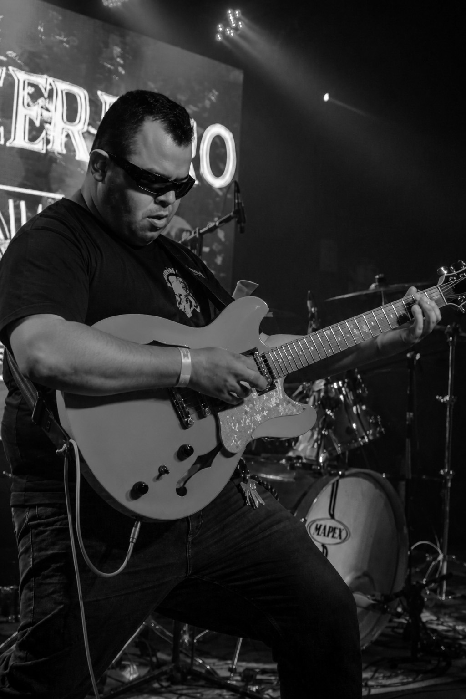
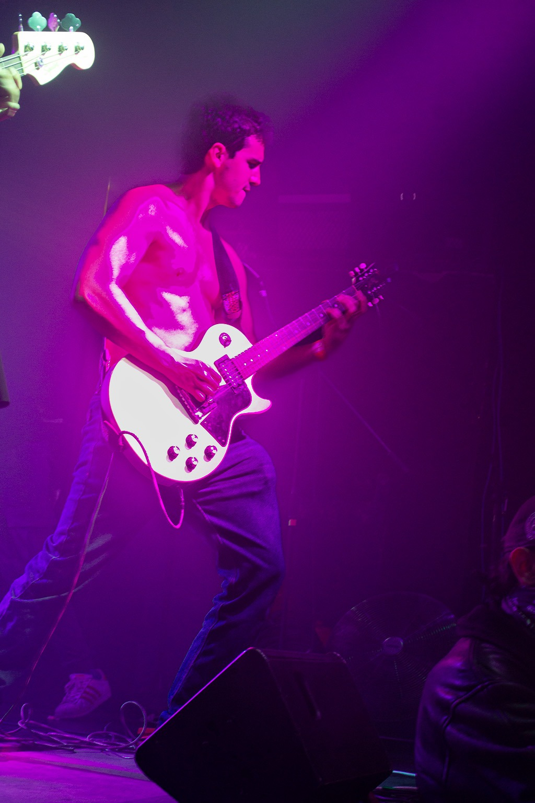
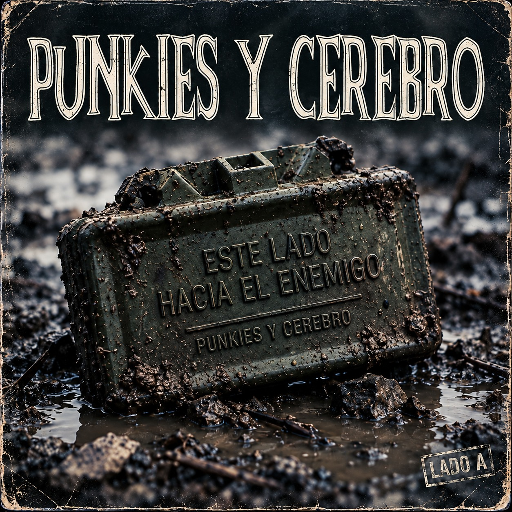

NUEVO ÁLBUM
ESTE LADO HACIA EL ENEMIGO
FRONT TOWARD ENEMY
PRÓXIMAMENTE

PUNKIES Y CEREBRO EN SPOTIFY
LO MÁS ESCUCHADO
PUNKIES Y CEREBRO · 2005–2026
DISCOGRAFÍA
EN VIVO
NOS VEMOS FRENTE AL ESCENARIO.
Próximas fechas por anunciar.
NUESTRA HISTORIA
DE MEDELLÍN.
CONTRA EL SILENCIO.
Punkies y Cerebro es un colectivo musical de Medellín con letras de contenido social y crítico. Una historia ligada a GP y a los escenarios de Colombia.
“Que caiga lo que apeste a poder”.PUNKIES Y CEREBRO
Punkies y Cerebro son:
- Jimmy Jazz: Voz y Bajo
- Juan Camilo R: Batería y Coros
- Alejandro Cuadros: Guitarra y Coros
- Sebastián Prieto: Guitarra y Coros
LEER LA HISTORIA COMPLETA
LOS CUATRO. EL MISMO RUIDO.
DESDE EL ESCENARIO.
Fotografías de la banda en vivo.
MATERIAL OFICIAL
LLEVA EL RUIDO CONTIGO.
Discos, camisas y gorras de Punkies y Cerebro. Precios en pesos colombianos (COP).
Cargando productos… Si no aparecen, recarga la página.
Arma tu pedido y envíalo por WhatsApp. Allí confirmamos disponibilidad, pago y envío.
JIMMY JAZZ G.P.
Jaime López «Jimmy Jazz», fundador y líder de GP, es la voz y el bajo de Punkies y Cerebro. Este espacio está dedicado a su trayectoria y sus productos.
Cargando productos… Si no aparecen, recarga la página.
Su material se añade al mismo carrito. Al comprar, envía el pedido de Jimmy a su WhatsApp. Si eliges productos de ambos, tendrás un mensaje para cada uno.
HABLEMOS.
Contratación, conciertos, colaboraciones y prensa.